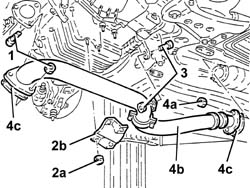
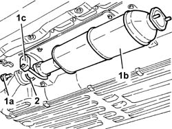
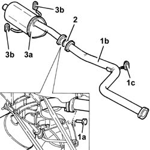

1076B12 exhaust pipe assembly r+r emission control versions
- Path
- Procedures > 10 ENGINE > 1076 EXHAUST PIPES AND SILENCERS > 1076B exhaust pipes and silencers > 1076B12 exhaust pipe assembly r+r emission control versions
- Kind
- repair procedure (removal / refitting; the operation number is the code)
- Applies to
- engines: 1.6 TS , 1.8 TS, 2.5 V6, 1.9 JTD 8v , 2.4 JTD 10v; all production periods
- Interactive page
- https://sloeber94.github.io/elrnDB-a156/en/#/3237568
Applies to: engines: 2.5 V6; all production periods
 Removing
Removing
 Refitting
Refitting1076B22 rear exhaust silencer - r+r emission control versions
1076B26 intermediate exhaust silencer - r+r emission control versions
1080B62 catalytic converter - r + r
7055B54 under-engine guard - r r
1076B52 exhaust pipe (one) leaving l/h or r/h exhaust manifold - r + r
Applies to: engines: 2.5 V6; all production periods
Refitting
Removing1076B52 exhaust pipe (one) leaving l/h or r/h exhaust manifold - r + r
7055B54 under-engine guard - r r
1080B62 catalytic converter - r + r
1076B26 intermediate exhaust silencer - r+r emission control versions
1076B22 rear exhaust silencer - r+r emission control versions
Applies to: engines: 1.6 TS , 1.8 TS; all production periods
Removing
Refitting1076B22 rear exhaust silencer - r+r emission control versions
1076B18 rigid section of exhaust pipe between catalytic converter and silencer - r + r
1080B62 catalytic converter - r + r
Applies to: engines: 1.6 TS , 1.8 TS; all production periods
Refitting
Removing1076B50 exhaust pipe attachment to engine - r + r
7055B54 under-engine guard - r r
1080B62 catalytic converter - r + r
1076B18 rigid section of exhaust pipe between catalytic converter and silencer - r + r
1076B22 rear exhaust silencer - r+r emission control versions
Applies to: engines: 1.9 JTD 8v , 2.4 JTD 10v; all production periods
Removing
RefittingPosition the vehicle on the lift.
Raise the car.
1. Undo the bolts securing the front exhaust pipe section to the turbocharger
2. Undo the nuts (2a) and remove the reinforcement bracket (2b).
3. Undo the bolt securing the rigid mount to the front exhaust pipe section.
4. Undo nuts (4a) and remove front exhaust pipe section (4b) together with seasls (4c).

Applies to: engines: 1.9 JTD 8v , 2.4 JTD 10v; all production periods
1. Undo the bolts (1a) and remove the catalytic converter (1b) after releasing from flexible mount (1c).
2. Remove the seal.

Applies to: engines: 1.9 JTD 8v , 2.4 JTD 10v; all production periods
1. Undo bolts (1a) and remove rigid exhaust pipe (1b) after releasing from flexible mount (1c).
2. Remove the seal.
3. Remove rear exhaust silencer (3a) after releasing from flexible mounts (3b).

Applies to: engines: 1.9 JTD 8v , 2.4 JTD 10v; all production periods
Refitting
RemovingFit the rear exhaust silencer and support using the flexible mounts.
Fit the rigid exhaust pipe together with the sealing ring and support using the flexible mount.
Tighten the rear exhaust silencer bolts, rigid exhaust pipe side, to the specified torque.
 | Fastening | Component | Ø | Value (daNm) |
|---|---|---|---|---|
- | Bolt | REAR EXHAUST SILENCER | M8 | 2.0 - 2.5 |
Fit the catalytic converter complete with sealing ring and support using the flexible mount.
Tighten the catalytic converter bolts, rigid exhaust pipe side, to the specified torque.
| Fastening | Component | Ø | Value (daNm) |
|---|---|---|---|---|
- | Bolt | CATALYTIC CONVERTER (ONE) | M8 | 2.0 - 2.5 |
Fit the front exhaust pipe with seals and secure to the catalytic converter by tightening the nuts to the specified torque.
| Fastening | Component | Ø | Value (daNm) |
|---|---|---|---|---|
- | Nut | EXHAUST PIPE TO ENGINE | M8 | 2.0 - 2.5 |
Tighten the bolt securing the rigid mount to the exhaust pipe.
Fit the reinforcement bracket and fix it using the nuts.
Tighten the bolts securing the front exhaust pipe to the turbocharger to the specified torque.
| Fastening | Component | Ø | Value (daNm) |
|---|---|---|---|---|
- | Bolt | EXHAUST PIPE TO ENGINE | M8 | 2.0 - 2.5 |
Lower the vehicle.
Remove the vehicle from the ramp.
Topics linked from this page (7)
- 1076B18 rigid section of exhaust pipe between catalytic converter and silencer - r + r
- 1076B22 rear exhaust silencer - r+r emission control versions
- 1076B26 intermediate exhaust silencer - r+r emission control versions
- 1076B50 exhaust pipe attachment to engine - r + r
- 1076B52 exhaust pipe (one) leaving l/h or r/h exhaust manifold - r + r
- 1080B62 catalytic converter - r + r
- 7055B54 under-engine guard - r r